Human visual review only. Automated checks cannot reliably catch anatomy slop.
/guided-reading/nonfiction/first-facts-level-a/book-10/page-004.webp/guided-reading/nonfiction/first-facts-level-a/book-10/page-005.webp/guided-reading/nonfiction/first-facts-level-a/book-10/page-006.webp/guided-reading/nonfiction/first-facts-level-a/book-10/page-007.webp/guided-reading/nonfiction/first-facts-level-a/book-10/source-title.webp/guided-reading/nonfiction/first-facts-level-a/book-11/cover.webp/guided-reading/nonfiction/first-facts-level-a/book-11/page-001.webp/guided-reading/nonfiction/first-facts-level-a/book-11/page-002.webp/guided-reading/nonfiction/first-facts-level-a/book-11/page-003.webp/guided-reading/nonfiction/first-facts-level-a/book-11/page-004.webp/guided-reading/nonfiction/first-facts-level-a/book-11/page-005.webp/guided-reading/nonfiction/first-facts-level-a/book-11/page-006.webp/guided-reading/nonfiction/first-facts-level-a/book-11/page-007.webp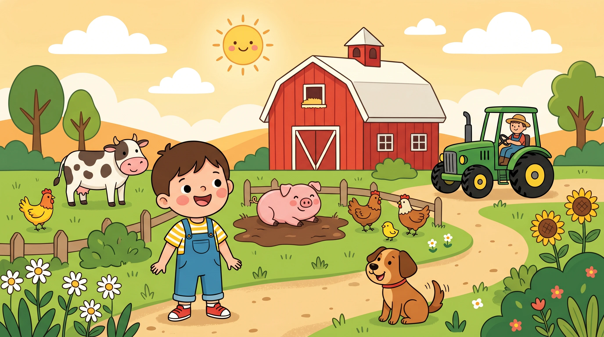
/guided-reading/nonfiction/first-facts-level-a/book-11/source-title.webp/guided-reading/nonfiction/first-facts-level-a/book-12/cover.webp/guided-reading/nonfiction/first-facts-level-a/book-12/page-001.webp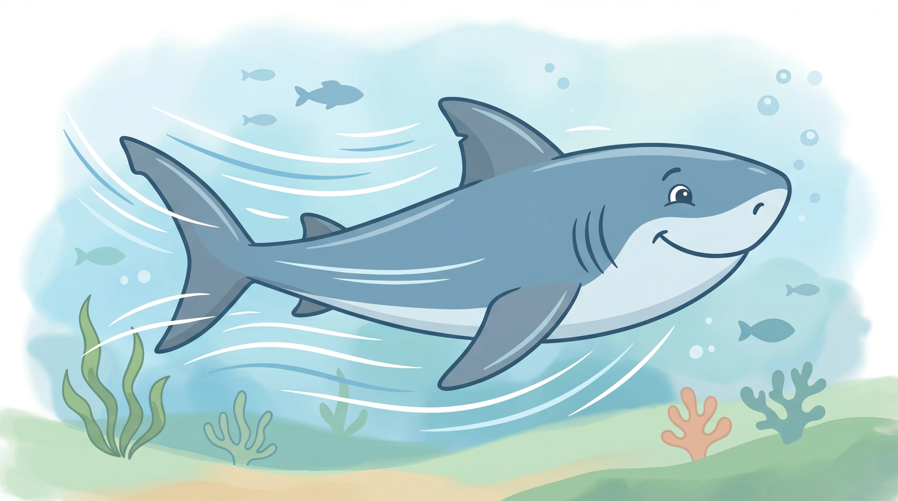
/guided-reading/nonfiction/first-facts-level-a/book-12/page-002.webp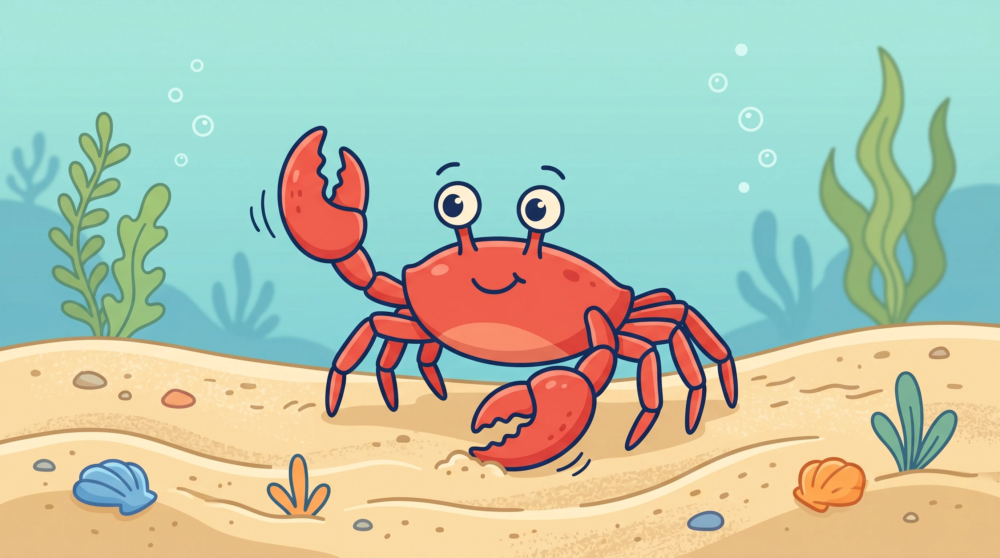
/guided-reading/nonfiction/first-facts-level-a/book-12/page-003.webp/guided-reading/nonfiction/first-facts-level-a/book-12/page-004.webp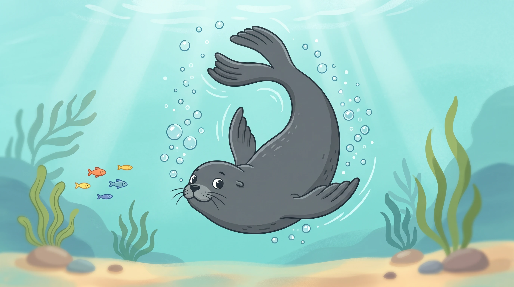
/guided-reading/nonfiction/first-facts-level-a/book-12/page-005.webp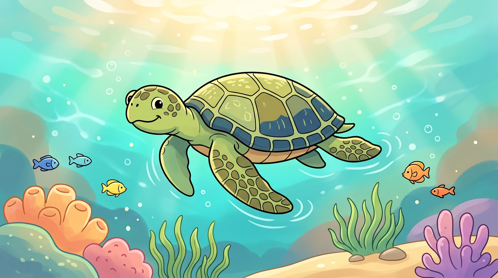
/guided-reading/nonfiction/first-facts-level-a/book-12/page-006.webp/guided-reading/nonfiction/first-facts-level-a/book-12/page-007.webp/guided-reading/nonfiction/first-facts-level-a/book-12/source-title.webp/guided-reading/nonfiction/first-facts-level-a/book-13/cover.webp/guided-reading/nonfiction/first-facts-level-a/book-13/page-001.webp/guided-reading/nonfiction/first-facts-level-a/book-13/page-002.webp/guided-reading/nonfiction/first-facts-level-a/book-13/page-003.webp/guided-reading/nonfiction/first-facts-level-a/book-13/page-004.webp/guided-reading/nonfiction/first-facts-level-a/book-13/page-005.webp/guided-reading/nonfiction/first-facts-level-a/book-13/page-006.webp/guided-reading/nonfiction/first-facts-level-a/book-13/page-007.webp/guided-reading/nonfiction/first-facts-level-a/book-13/source-title.webp/guided-reading/nonfiction/first-facts-level-a/book-14/cover.webp/guided-reading/nonfiction/first-facts-level-a/book-14/page-001.webp/guided-reading/nonfiction/first-facts-level-a/book-14/page-002.webp/guided-reading/nonfiction/first-facts-level-a/book-14/page-003.webp/guided-reading/nonfiction/first-facts-level-a/book-14/page-004.webp/guided-reading/nonfiction/first-facts-level-a/book-14/page-005.webp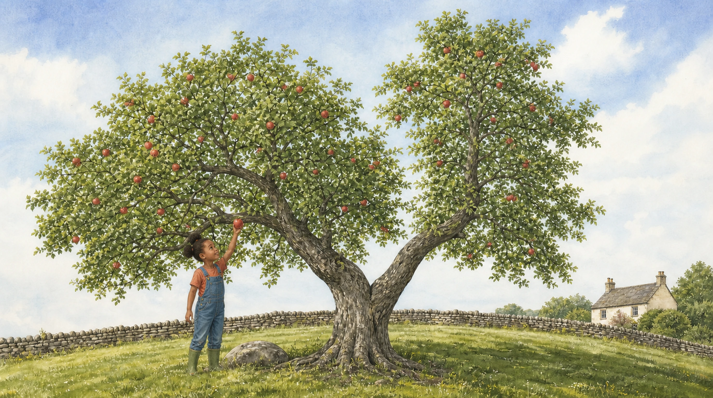
/guided-reading/nonfiction/first-facts-level-a/book-14/page-006.webp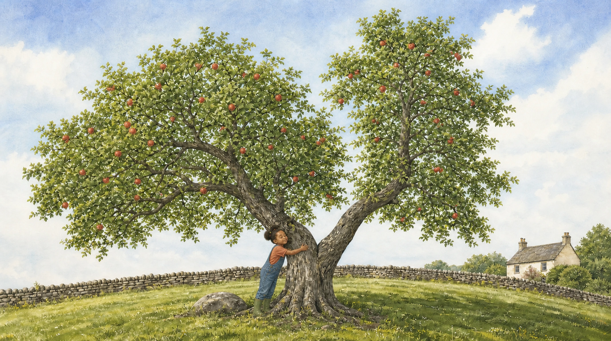
/guided-reading/nonfiction/first-facts-level-a/book-14/page-007.webp/guided-reading/nonfiction/first-facts-level-a/book-14/source-title.webp/guided-reading/nonfiction/first-facts-level-a/book-15/cover.webp/guided-reading/nonfiction/first-facts-level-a/book-15/page-001.webp/guided-reading/nonfiction/first-facts-level-a/book-15/page-002.webp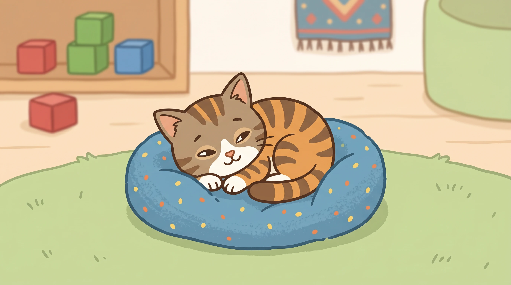
/guided-reading/nonfiction/first-facts-level-a/book-15/page-003.webp/guided-reading/nonfiction/first-facts-level-a/book-15/page-004.webp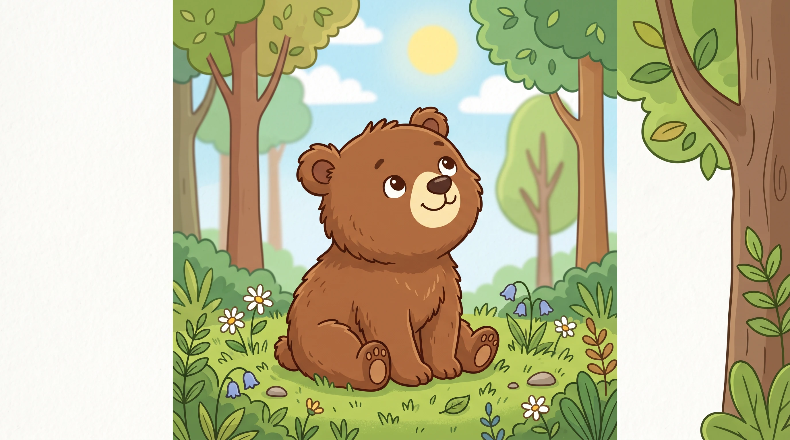
/guided-reading/nonfiction/first-facts-level-a/book-15/page-005.webp/guided-reading/nonfiction/first-facts-level-a/book-15/page-006.webp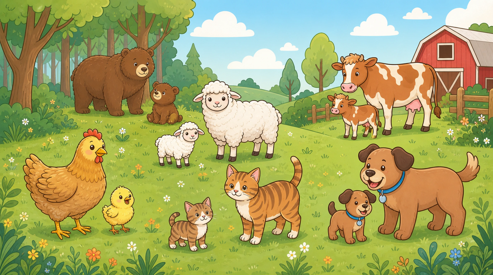
/guided-reading/nonfiction/first-facts-level-a/book-15/page-007.webp/guided-reading/nonfiction/first-facts-level-a/book-15/source-title.webp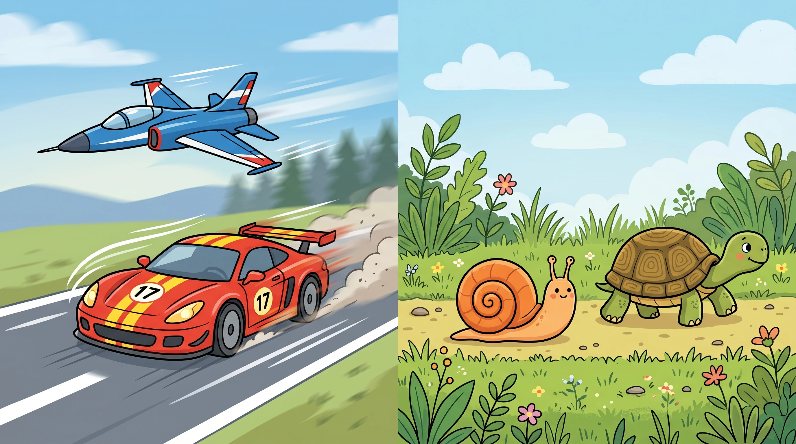
/guided-reading/nonfiction/first-facts-level-a/book-16/cover.webp/guided-reading/nonfiction/first-facts-level-a/book-16/page-001.webp/guided-reading/nonfiction/first-facts-level-a/book-16/page-002.webp/guided-reading/nonfiction/first-facts-level-a/book-16/page-003.webp/guided-reading/nonfiction/first-facts-level-a/book-16/page-004.webp/guided-reading/nonfiction/first-facts-level-a/book-16/page-005.webp/guided-reading/nonfiction/first-facts-level-a/book-16/page-006.webp/guided-reading/nonfiction/first-facts-level-a/book-16/page-007.webp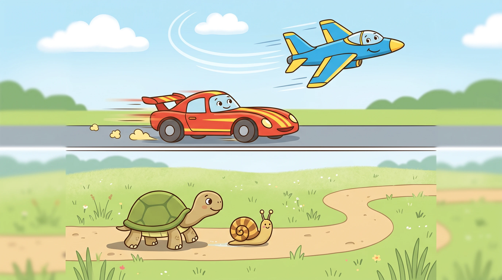
/guided-reading/nonfiction/first-facts-level-a/book-16/source-title.webp/guided-reading/nonfiction/first-facts-level-a/book-17/cover.webp/guided-reading/nonfiction/first-facts-level-a/book-17/page-001.webp/guided-reading/nonfiction/first-facts-level-a/book-17/page-002.webp/guided-reading/nonfiction/first-facts-level-a/book-17/page-003.webp/guided-reading/nonfiction/first-facts-level-a/book-17/page-004.webp/guided-reading/nonfiction/first-facts-level-a/book-17/page-005.webp/guided-reading/nonfiction/first-facts-level-a/book-17/page-006.webp/guided-reading/nonfiction/first-facts-level-a/book-17/page-007.webp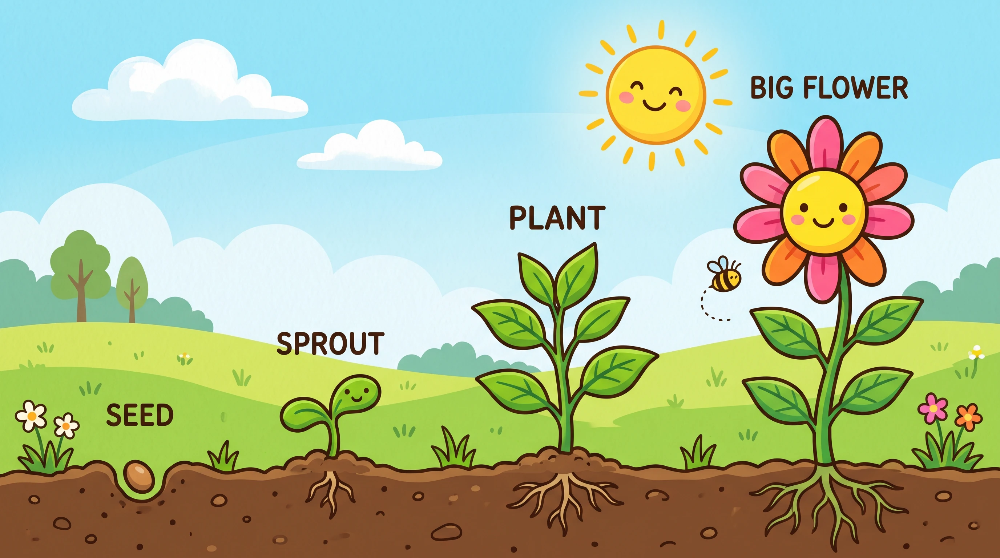
/guided-reading/nonfiction/first-facts-level-a/book-17/source-title.webp/guided-reading/nonfiction/first-facts-level-a/book-18/cover.webp/guided-reading/nonfiction/first-facts-level-a/book-18/page-001.webp/guided-reading/nonfiction/first-facts-level-a/book-18/page-002.webp/guided-reading/nonfiction/first-facts-level-a/book-18/page-003.webp/guided-reading/nonfiction/first-facts-level-a/book-18/page-004.webp/guided-reading/nonfiction/first-facts-level-a/book-18/page-005.webp/guided-reading/nonfiction/first-facts-level-a/book-18/page-006.webp/guided-reading/nonfiction/first-facts-level-a/book-18/page-007.webp/guided-reading/nonfiction/first-facts-level-a/book-18/source-title.webp/guided-reading/nonfiction/first-facts-level-a/book-19/cover.webp/guided-reading/nonfiction/first-facts-level-a/book-19/page-001.webp/guided-reading/nonfiction/first-facts-level-a/book-19/page-002.webp